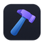
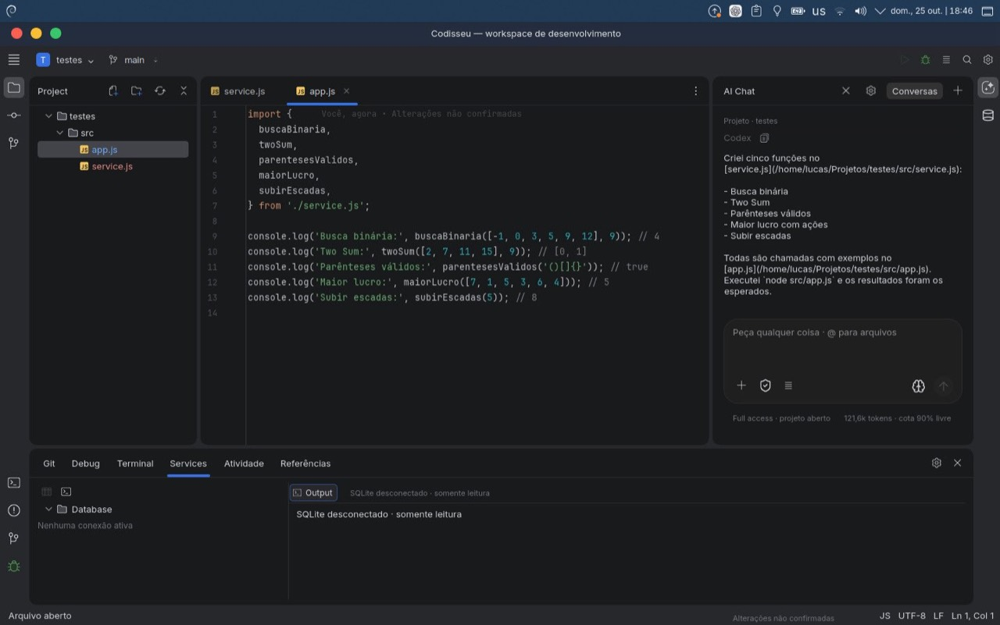

01
Um editor, várias linguagens.
PHP, JavaScript, TypeScript, HTML, CSS, JSON e SQL. Abas, busca e destaque de sintaxe no mesmo editor.

codisseu.
Código, banco de dados, Git e IA no mesmo lugar.
Uma IDE desktop em Rust, feita pra você construir.
Gratuito e de código aberto Linux x86_64 · glibc 2.39+ Em desenvolvimento

MENOS TROCA DE CONTEXTO
Tem hora que você está no PHP. Daqui a pouco, no JavaScript ou em uma consulta SQL. A ideia é ter tudo ali, sem sair da mesma janela.
PHP, JavaScript, TypeScript, HTML, CSS, JSON e SQL. Abas, busca e destaque de sintaxe no mesmo editor.
Abra o terminal, acompanhe as alterações no Git e consulte seu banco. O SQLite local já vem com a IDE.
Converse no AI Chat com o provedor que você configurar. Seu projeto e a conversa, lado a lado.
Recursos de linguagem, Git e IA usam as ferramentas e contas que você configurar. Veja como funciona
UM PROJETO EM CONSTRUÇÃO
O Codisseu está dando os primeiros passos. A proposta é simples: uma IDE nativa, com as ferramentas que a gente usa no dia a dia, reunidas em um lugar só.
Encontrou um problema? Teve uma ideia? Cola no GitHub. Você pode acompanhar, testar e ajudar a construir o que vem por aí.
Conheça o repositórioV0.1.0-ALPHA.1
Baixe, explore e conte pra gente como foi.
Pacote .deb · x86_64 / amd64 · 51,4 MiB
Requer glibc 2.39 ou superior. Validado em Debian 13 com X11. Confira o guia de instalação para os requisitos completos.
Você pode abrir, editar e salvar seus arquivos sem eles. O SQLite local também já está incluído. Para rodar seu projeto, configure o PHP, Node ou a ferramenta na versão que ele precisa. O Codisseu não substitui as versões do seu sistema. Veja as ferramentas opcionais.
Este download inclui o núcleo da IDE. Alguns recursos exigem ferramentas externas; depuração, navegador integrado e outros motores adicionais ainda não fazem parte deste pacote público. Windows, macOS, ARM e Wayland ainda não foram validados. Confira os recursos e limites da versão.